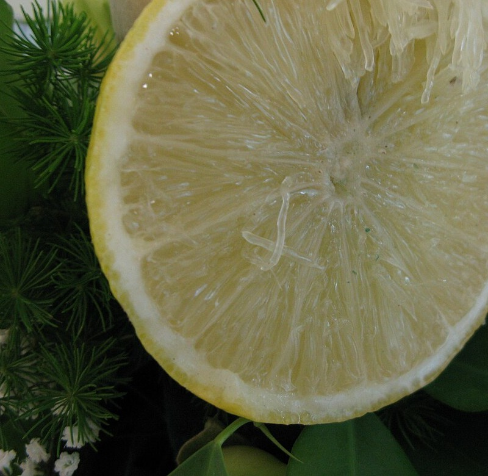

Schematic artery cross-sections. Jacobs, NEJM 2022 · Ference, JACC 2012

Citrus bergamia is a citrus grown mainly in Calabria, Italy, and rich in flavanones. Two of them, brutieridin and melitidin, carry a statin-like side chain and are proposed to inhibit HMG-CoA reductase, the statin target.
Starting Citrus bergamot early in young patients with high cholesterol, who do not yet meet statin criteria, will lower LDL-C and linked cardiometabolic risk factors, and delay the need for statin therapy in the long run.
Mechanisms are proposed, mainly from laboratory and small human studies.
| Statin | Citrus bergamot | |
|---|---|---|
| Target | HMG-CoA reductase Proven | Same enzyme Proposed |
| LDL-C lowering | 30–50% or more | ≈ 40 mg/dL (adults) |
| Other effects | Small rise in diabetes risk | ↓ glucose, TG, BP, liver fat |
| Evidence | Large outcome trials Strong | Small RCTs Low |
| Young patients | Guideline use in FH | Not yet tested |
| Role | Treatment when indicated | Early step before statins? |
Conceptual model of the cumulative-exposure principle (Ference 2012, 2017). Lines assume constant LDL-C; the bergamot line assumes a 0.8 mmol/L (≈ 31 mg/dL) reduction from age 16.
Premature heart disease in a close relative
LDL-C, triglycerides, HDL-C, apoB
Genetically determined; measure once
Polygenic risk score; FH variants (LDLR, APOB, PCSK9)
Waist, blood pressure, glucose, liver fat
Universal lipid screening at 9–11 and 17–21 years (NHLBI 2011); Lp(a) once (EAS 2022).
Pooled from 9 RCTs, 615 adults (Chambari, Food Sci Nutr 2026). Mean difference vs control with 95% CI; every interval excludes zero. GRADE certainty: low to very low.
Young patients with high cholesterol
Lipids, Lp(a), genetic score, metabolic signs
Monogenic FH → statin care; others enrolled
Bergamot vs placebo, with lifestyle advice
12 months; adherence, safety, growth
LDL-C, apoB, glucose, BP, liver fat
Time until a statin is needed
Atherosclerosis begins in youth and LDL-C damage accumulates over time. Citrus bergamot may improve several cardiometabolic risk factors in adults, making it a strong candidate to test as an early step to delay statin therapy in young patients.